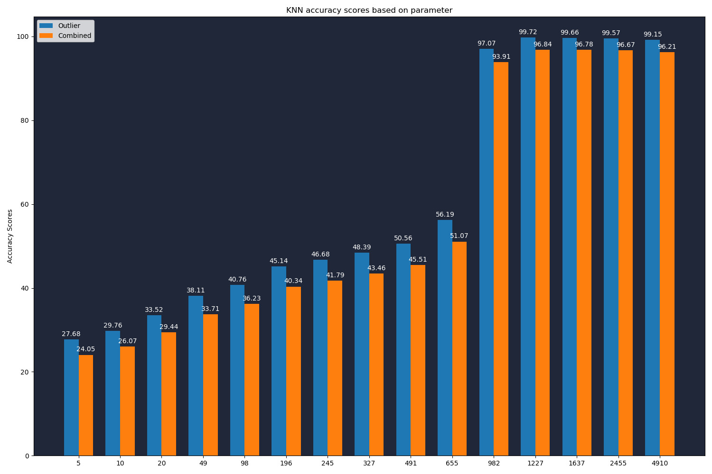
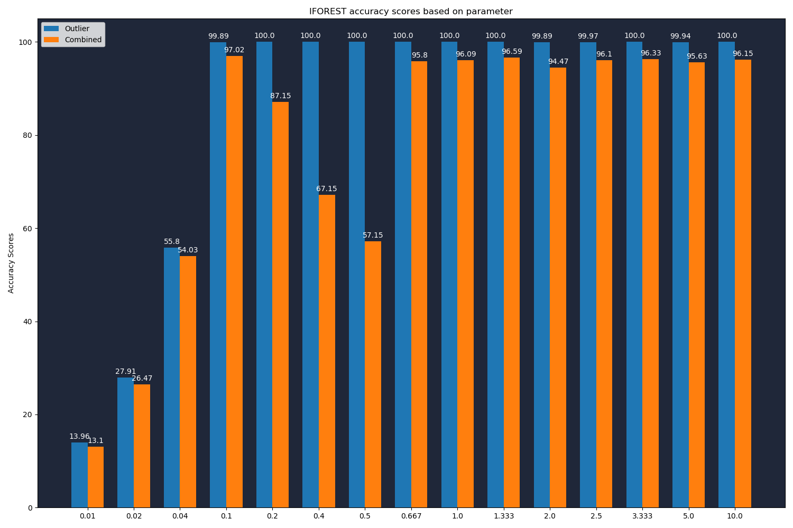
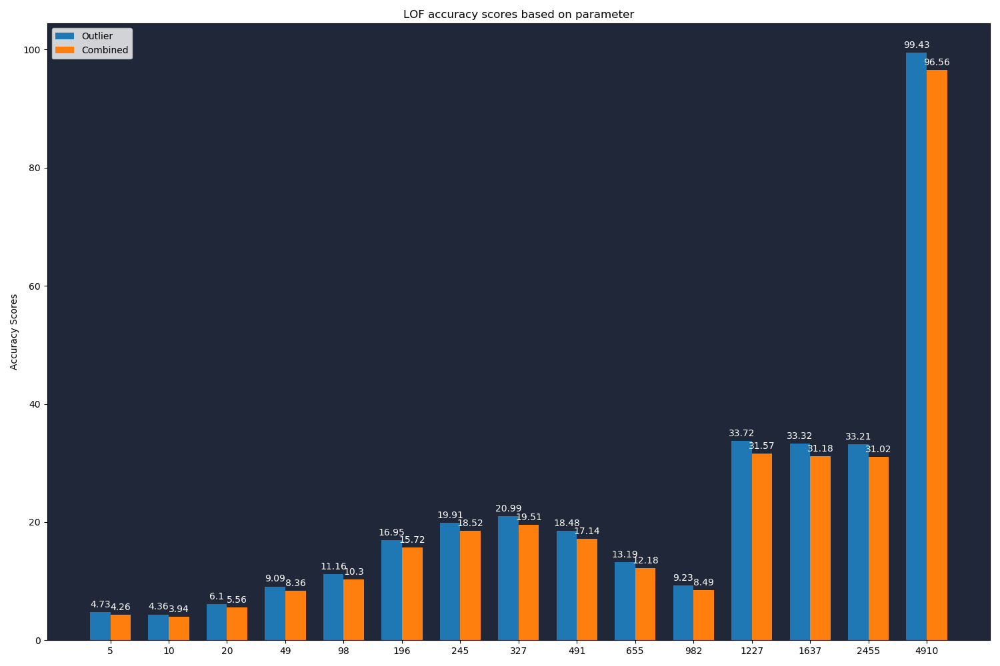

Benchmark Result 28/04/20 13:06
K-Nearest Neighbours
| Parameter | Number of outliers detected | Outlier Detection Accuracy (%) | Classification Accuracy (%) | Combined Accuracy (%) | Balanced Accuracy (%) | Precision (Binary) Score (%) | Precision (Macro) Score (%) | Processing Time (H:M:S) |
|---|
| 5 | 4873 | 27.68 | 86.88 | 24.05 | 59.56 | 19.95 | 57.1 | 0 days 00:00:01.866045 |
| 10 | 4671 | 29.76 | 87.59 | 26.07 | 60.9 | 22.37 | 58.41 | 0 days 00:00:02.216076 |
| 20 | 4820 | 33.52 | 87.83 | 29.44 | 62.77 | 24.42 | 59.57 | 0 days 00:00:02.773585 |
| 49 | 4833 | 38.11 | 88.46 | 33.71 | 65.22 | 27.68 | 61.39 | 0 days 00:00:03.767940 |
| 98 | 4812 | 40.76 | 88.88 | 36.23 | 66.67 | 29.74 | 62.52 | 0 days 00:00:06.248294 |
| 196 | 4879 | 45.14 | 89.37 | 40.34 | 68.96 | 32.49 | 64.07 | 0 days 00:00:08.188108 |
| 245 | 4910 | 46.68 | 89.52 | 41.79 | 69.75 | 33.38 | 64.57 | 0 days 00:00:08.580176 |
| 327 | 4886 | 48.39 | 89.82 | 43.46 | 70.7 | 34.77 | 65.34 | 0 days 00:00:10.205715 |
| 491 | 4944 | 50.56 | 90.01 | 45.51 | 71.8 | 35.9 | 65.99 | 0 days 00:00:12.722980 |
| 655 | 4909 | 56.19 | 90.89 | 51.07 | 74.88 | 40.19 | 68.36 | 0 days 00:00:15.397835 |
| 982 | 4907 | 97.07 | 96.74 | 93.91 | 96.89 | 69.45 | 84.61 | 0 days 00:00:20.176057 |
| 1227 | 4909 | 99.72 | 97.11 | 96.84 | 98.31 | 71.32 | 85.65 | 0 days 00:00:22.875837 |
| 1637 | 4908 | 99.66 | 97.11 | 96.78 | 98.28 | 71.29 | 85.63 | 0 days 00:00:25.447959 |
| 2455 | 4909 | 99.57 | 97.09 | 96.67 | 98.24 | 71.22 | 85.59 | 0 days 00:00:36.110453 |
| 4910 | 4909 | 99.15 | 97.03 | 96.21 | 98.01 | 70.91 | 85.42 | 0 days 00:00:54.748622 |

Isolation Forest
| Parameter | Number of outliers detected | Outlier Detection Accuracy (%) | Classification Accuracy (%) | Combined Accuracy (%) | Balanced Accuracy (%) | Precision (Binary) Score (%) | Precision (Macro) Score (%) | Processing Time (H:M:S) |
|---|
| 0.01 | 491 | 13.96 | 93.84 | 13.1 | 56.98 | 99.8 | 96.79 | 0 days 00:00:04.232684 |
| 0.02 | 982 | 27.91 | 94.84 | 26.47 | 63.95 | 99.8 | 97.27 | 0 days 00:00:04.085079 |
| 0.04 | 1964 | 55.8 | 96.83 | 54.03 | 77.89 | 99.75 | 98.23 | 0 days 00:00:04.130786 |
| 0.1 | 4910 | 99.89 | 97.13 | 97.02 | 98.4 | 71.43 | 85.71 | 0 days 00:00:03.928496 |
| 0.2 | 9820 | 100.0 | 87.15 | 87.15 | 93.08 | 35.75 | 67.88 | 0 days 00:00:03.860677 |
| 0.4 | 19639 | 100.0 | 67.15 | 67.15 | 82.31 | 17.88 | 58.94 | 0 days 00:00:04.022244 |
| 0.5 | 24548 | 100.0 | 57.15 | 57.15 | 76.93 | 14.3 | 57.15 | 0 days 00:00:04.148940 |
| 0.667 | 5572 | 100.0 | 95.8 | 95.8 | 97.74 | 63.01 | 81.51 | 0 days 00:00:02.449451 |
| 1.0 | 5429 | 100.0 | 96.09 | 96.09 | 97.9 | 64.67 | 82.34 | 0 days 00:00:02.455434 |
| 1.333 | 5183 | 100.0 | 96.59 | 96.59 | 98.17 | 67.74 | 83.87 | 0 days 00:00:02.448485 |
| 2.0 | 6170 | 99.89 | 94.57 | 94.47 | 97.02 | 56.84 | 78.42 | 0 days 00:00:02.431499 |
| 2.5 | 5409 | 99.97 | 96.13 | 96.1 | 97.9 | 64.89 | 82.44 | 0 days 00:00:02.513281 |
| 3.333 | 5313 | 100.0 | 96.33 | 96.33 | 98.02 | 66.08 | 83.04 | 0 days 00:00:02.461420 |
| 5.0 | 5621 | 99.94 | 95.69 | 95.63 | 97.66 | 62.43 | 81.21 | 0 days 00:00:02.460422 |
| 10.0 | 5403 | 100.0 | 96.15 | 96.15 | 97.92 | 64.98 | 82.49 | 0 days 00:00:02.465409 |

Local Outlier Factor
| Parameter | Number of outliers detected | Outlier Detection Accuracy (%) | Classification Accuracy (%) | Combined Accuracy (%) | Balanced Accuracy (%) | Precision (Binary) Score (%) | Precision (Macro) Score (%) | Processing Time (H:M:S) |
|---|
| 5 | 1728 | 4.73 | 90.01 | 4.26 | 50.65 | 9.61 | 51.27 | 0 days 00:00:03.898578 |
| 10 | 1512 | 4.36 | 90.39 | 3.94 | 50.69 | 10.12 | 51.53 | 0 days 00:00:04.811135 |
| 20 | 1247 | 6.1 | 91.18 | 5.56 | 51.91 | 17.16 | 55.14 | 0 days 00:00:06.296165 |
| 49 | 1065 | 9.09 | 91.98 | 8.36 | 53.72 | 29.95 | 61.65 | 0 days 00:00:08.825451 |
| 98 | 1075 | 11.16 | 92.26 | 10.3 | 54.83 | 36.47 | 64.99 | 0 days 00:00:11.803442 |
| 196 | 1235 | 16.95 | 92.76 | 15.72 | 57.77 | 48.18 | 71.04 | 0 days 00:00:17.903167 |
| 245 | 1322 | 19.91 | 93.0 | 18.52 | 59.27 | 52.87 | 73.49 | 0 days 00:00:19.858898 |
| 327 | 1422 | 20.99 | 92.95 | 19.51 | 59.74 | 51.83 | 73.0 | 0 days 00:00:22.395972 |
| 491 | 1340 | 18.48 | 92.76 | 17.14 | 58.48 | 48.43 | 71.22 | 0 days 00:00:29.703582 |
| 655 | 1159 | 13.19 | 92.37 | 12.18 | 55.83 | 39.95 | 66.8 | 0 days 00:00:34.117332 |
| 982 | 1057 | 9.23 | 92.02 | 8.49 | 53.81 | 30.65 | 62.01 | 0 days 00:00:46.075140 |
| 1227 | 1984 | 33.72 | 93.63 | 31.57 | 65.98 | 59.68 | 77.37 | 0 days 00:00:54.297827 |
| 1637 | 1980 | 33.32 | 93.58 | 31.18 | 65.77 | 59.09 | 77.06 | 0 days 00:01:03.184066 |
| 2455 | 2059 | 33.21 | 93.4 | 31.02 | 65.63 | 56.63 | 75.82 | 0 days 00:01:22.850442 |
| 4910 | 4891 | 99.43 | 97.11 | 96.56 | 98.18 | 71.38 | 85.67 | 0 days 00:02:22.293740 |
